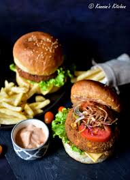

Ingredients:
- 1 can (15 oz) black beans, drained and mashed
- 1/2 cup oats
- 1/2 cup breadcrumbs
- 1/2 cup chopped onion
- 1/4 cup chopped bell pepper
- 2 cloves garlic, minced
- 1 tsp cumin
- 1/2 tsp smoked paprika
- 1/2 tsp salt
- 1/4 tsp black pepper
- 1 egg (or flax egg for vegan option)
- 1 tbsp olive oil
- 4 burger buns
- Lettuce, tomato, and condiments for serving
Instructions:
- In a large bowl, mash the black beans with a fork.
- Add oats, breadcrumbs, onion, bell pepper, garlic, and spices.
- Mix in the egg (or flax egg) and form into patties.
- Heat oil in a pan over medium heat.
- Cook patties for 4-5 minutes per side until golden brown.
- Toast the burger buns and assemble with lettuce, tomato, and condiments.
- Serve hot and enjoy your homemade veggie burger!